Après une errance post petit-déjeuner, j’ai enfin trouvé où m’installer. Je n’en avais d’abord aucune idée, alors j’ai parcouru les lieux, appareil photo à la main. En attente d’une intuition. Le sentiment de la juste place qui s’impose.
Je suis passée dans la grange. Ses belles ouvertures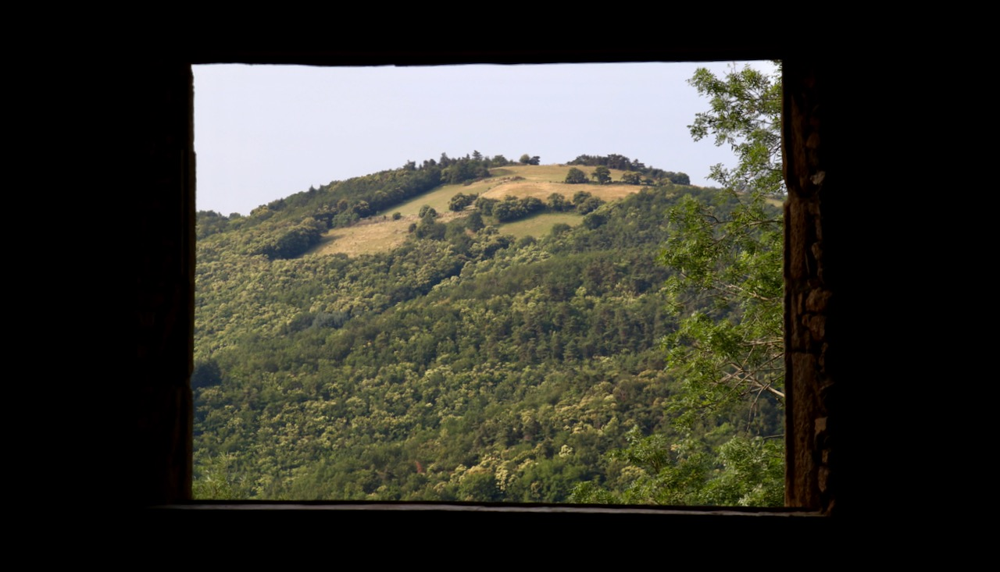 m’inspirent, mais ce n’était pas le lieu. Je ne sentais rien.
Derrière la grange, Agathe testait des assemblages de fil. On a parlé de la beauté du mur derrière elle...
J’ai pris ses mains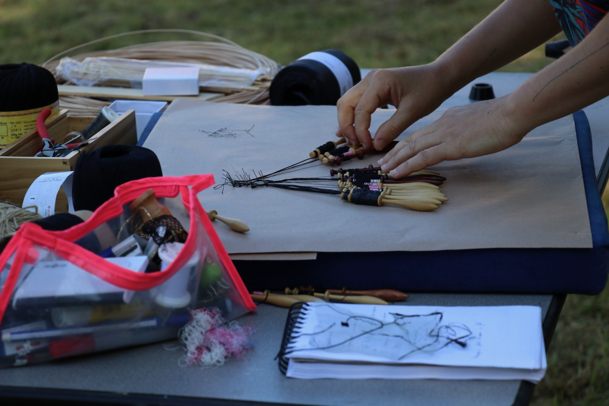 en photo.
...de pourquoi elle s’était mise là, que je ne savais où me poser.
Puis une photo du mur,
...des végétaux qui en sortent,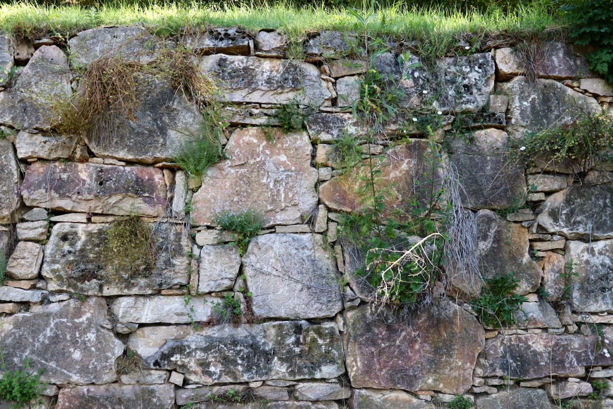 de ce que je prévoyais d’écrire, de comment le restituer.
J’ai repris mon tour…
Passage par l’atelier, trop sombre, pas assez dégagé sur l’extérieur.
Je suis allée devant le potager. Une photo de Pierlo en train de tailler un gros morceau de bois.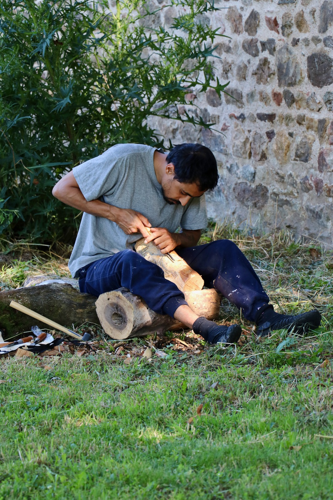
Sarah travaille pieds-nus une grande couverture de survie qu’elle a étalé sur des tables. Elle me tourne le dos, deux tatouages au cœur des cuisses.
Je fais des allées et venues entre le souvenir de mon errance matinale, de comment j’ai choisi ma place et ce que je vois tout autour de moi.
Parfois je m’interromps et prends une photo.
En relisant ces mots, je pense à installer un code couleur permettant d’identifier les différents compartiments de mes pensées. Il faudra assurer un contraste suffisant pour que ce soit lisible. Ou trouver autre chose. Il y a le présent le passé les souvenirs et l’observation mais aussi la réflexion sur la forme et sur le fond. Là, je pense à comment la forme peut révéler l’imbrication frénétique des différents états cités. Je pourrais mettre les parenthèses réflexives dans des nouvelles pages ? ou des popins au survol ou au clic ? Et créer un code visuel pour le reste. Ça va demander plus de travail technique. Mais pourquoi pas. C’est stimulant aussi. Mon esprit a presque envie de partir sur ce sujet : qu’est-ce qui m’excite dans l’idée d’approfondir des questions techniques pour les besoins de mes envies de mise en forme/page ? mais je ressens une petite flemme de formuler tout ça. Alors peut-être que je laisse cette idée pour plus tard – ou pas...
Corinne passe avec une brouette, descend à l’observatoire.
Ça répond à ma question d’hier. Je crois que je veux parsemer mon texte de photos, à découvrir au survol d’un mot.
Mon esprit part dans la cuisine, j’entends d’ici un bruit que je n’arrive pas à identifier. Mixeur ? Essoreuse à salade ? Et la voix joyeuse de Laura.
Je reviens ici. J’en étais au souvenir de mon errance matinale. Une photo de Pierlo en train de tailler un gros morceau de bois. Devant le potager, je contemple la vue en contrebas, un bureau ici, face aux ondulations de la vallée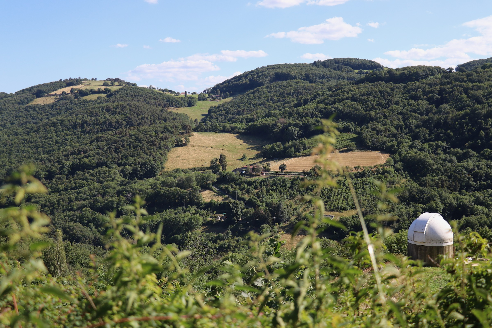, ce serait beau, mais je tourne le dos au reste de la maisonnée. Je comprends enfin ce qui ne va pas. Je ne veux pas choisir car je veux être parmi vous toustes. Vous voir évoluer et rester connectée à chacun.e d’entre vous. Je pense à pourquoi tout ça est lié à ma mue. Peut-être faudra-t-il le raconter. J’avais commencé à écrire là-dessus.
Je traverse la cour entre l’atelier et la cave, je grimpe les marches et monte sous le chapi. Mon regard balaie les environs. C’est d’ici qu’on a la meilleure vue.
Poste de surveillance idéal.
Corinne respire les roses près de la fontaine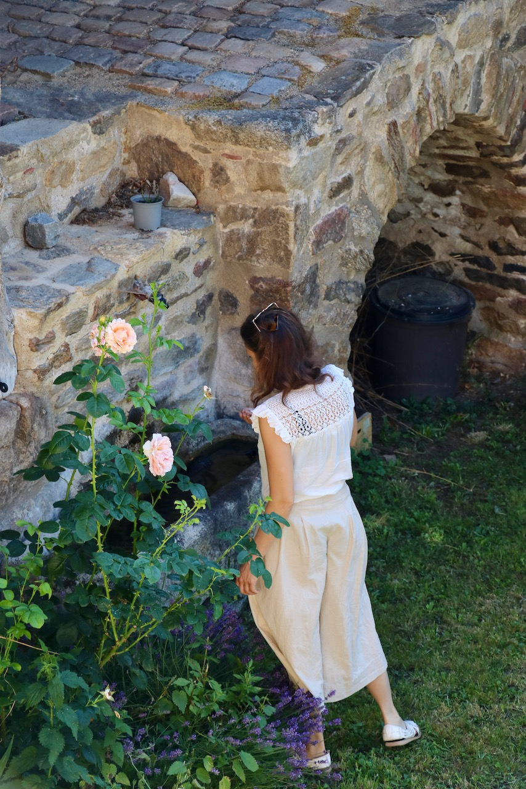, Thomas installe un trapèze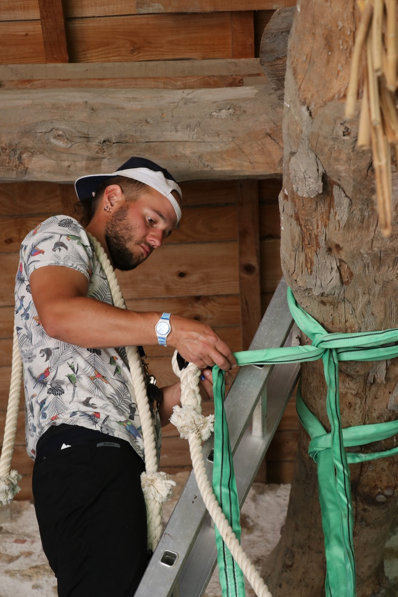, Ines chill dans un transat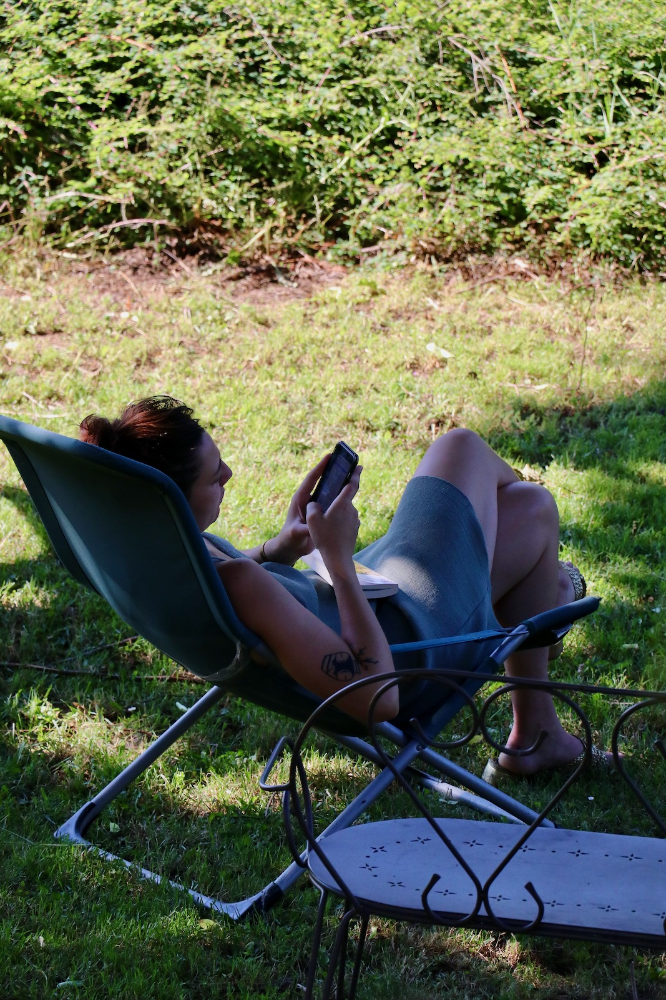. C’est décidé, je veux être là. Pour les heures qui viennent au moins.
Tikal a été libérée et passe dire bonjour à chacun.e d’entre nous.
Bref, j’ai enfin trouvé où m’installer. D’ici j’ai un panorama parfait qui répond à mon besoin de rester d’une façon ou d’une autre connectée au plus grand nombre.
Ne rien louper de vos allées et venues. De vos échanges et discussion. Je note ce que ça m’évoque dans mon téléphone. Deux décisions s’imposent alors : garder mon téléphone toujours en main pour pouvoir à tout instant noter ce qui me traverse. Et constituer, comme je suis en train de le faire…
J’entends dire « elle fait son moule dans l’observatoire », je pense qu’on parle de Corinne, j’ai envie d’aller voir. Ma concentration s’étiole. C’est décidé, je vais aller chercher un fruit à la cuisine. J’embarque téléphone et appareil photo : interdiction de se déplacer sans… et j’y vais.
Il est 11h15 et Entre deux bouchées, je vous raconte ce que j’ai vu sur le chemin. Alex et Raph vissaient un bout de bois dans l’atelier, Charlotte s’était installé plus loin sous un parasol, et l’ouverture de l’observatoire avait changé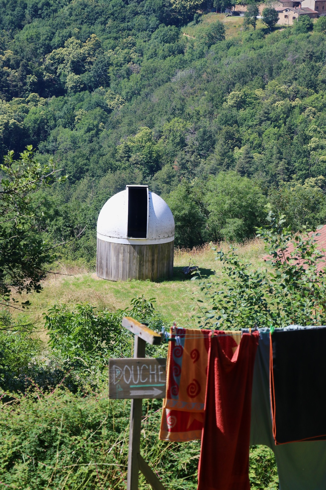. Je ne l’avais jamais vu comme ça. Aussi béante. Gueule ouverte et noire se détachant du blanc de son dôme et du bleu du ciel. Et surtout, surtout… le hasard heureux d’une coïncidence photogénique… De la fenêtre de la grange en face du perron, des silhouettes de chaises se détachent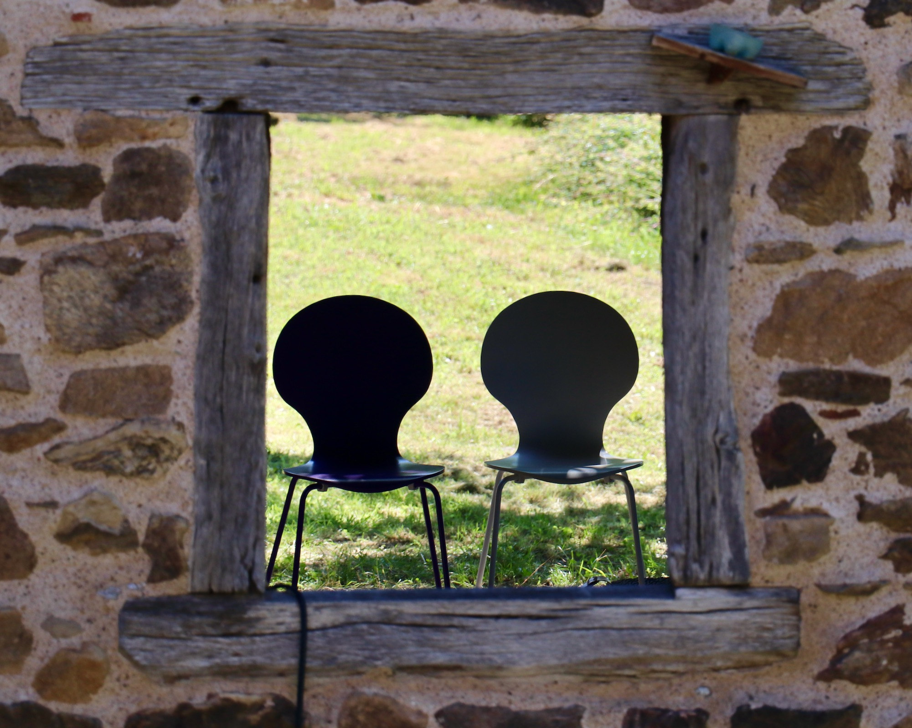. De cette fenêtre je capte toujours des moments de vie très différents. Je repense à cette photo de Max en train de faire du yoga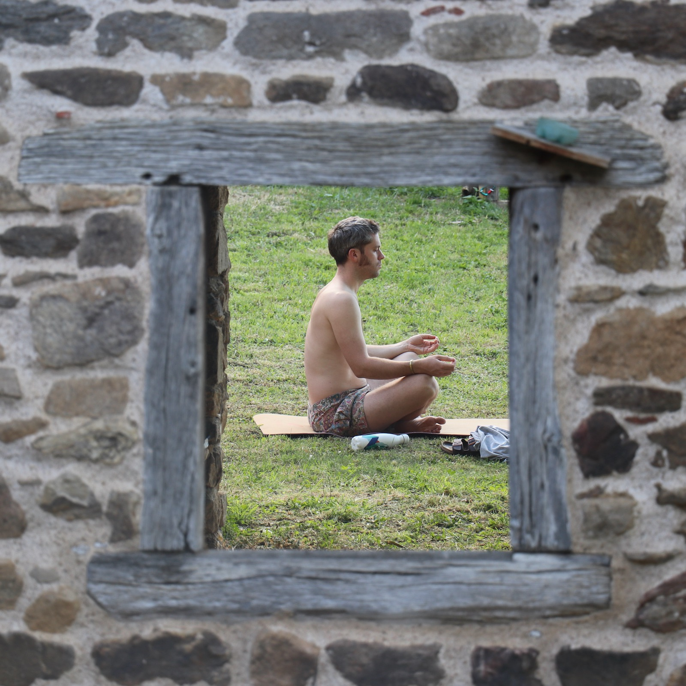. Et de mon sentiment de voyeurisme à chaque fois que je saisis la solitude d’un moment d’intimité.
« Il y a quelqu’un dans le chalet ». Je note. Je veux savoir.
Bon reprenons… :
... Et constituer, comme je suis en train de le faire, un petit journal de bord de mes cheminements quotidiens. En pensée et dans l’espace. Au moins pour capter les premières pensées du matin, celles qui déterminent souvent tout le reste. J’avais commencé une petite note sur ça aussi je crois.
De là où je suis, je peux donc m’interrompre, prendre une photo, vous regarder, vous écouter, me replonger dans tout autre chose. Vous oublier. À tout moment je mets mes écouteurs pour un semblant d'isolement. C’est le meilleur open-space du monde. Et peut-être que demain je voudrais m’isoler pour de vrai. Mais pour le moment je suis là, parmi vous.
Je voulais écrire sur moi, sur mes pensées, ma frénésie intérieure mais je me sens à cet instant T incapable d’écrire sur autre chose que la vie de ce lieu magique. Son énergie, son mouvement, ses échanges.
Il me semble cependant que je suis arrivée au bout du journal de bord de cette matinée. Du rêveil à mon installation ici, souvenirs entrecoupés de toutes mes pensées intrusives et de mes observations rêveuses. C’est donc soit l’heure d’une énième pause et vadrouille que je reviendrai vous raconter, soit enfin le moment d’aller plus en profondeur dans ma frénésie intérieure. Ou encore tenter une première mise en page de cet ensemble et plonger dans des considérations plus techniques ?
En parlant de technique... La discussion qui se déroule actuellement sous mes yeux parle d’un goutte-à-goutte qu’il faudrait pouvoir stopper ou dévier. J’adore ces échanges qui sont des nœuds que vous démêlez toustes ensembles.
Comment me reconcentrer ?
J’ai tout autant envie de me lever et d’errer de personne en personne que de remettre les mains dans le code pour expérimenter dans le réel mes réflexions. Et essayer d’intégrer mes photos à tout cela. Je vais suivre mon intuition et commencer par me lever, aller mettre le fruit de mon petit déjeuner au lave-vaisselle. Mais d’abord, après 2h de clapotis de clavier, une petite sauvegarde s’impose.
Une réflexion avant : faudra-t-il relire et faire évoluer ce texte, ou tout vous laisser brut de décoffrage ? Stop. Debout.